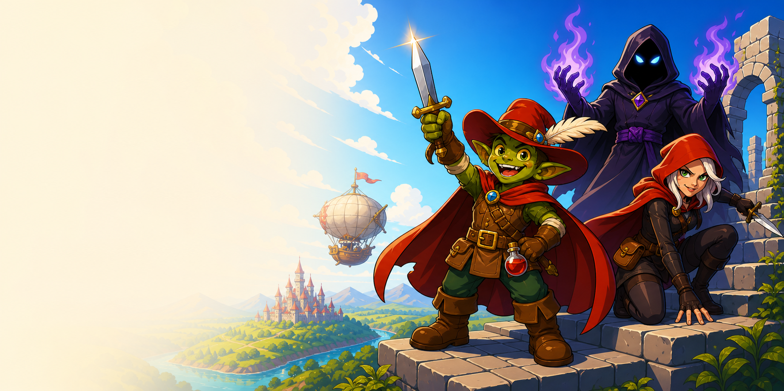

Source before invention
Facts trace back to checkpointed text, manifests, and approved media.
 ODOSSkills Archive
ODOSSkills Archive
Preserved 16 July 2026 · Four skills · One production system
The ODOS pipeline turns structured adventure text into a complete visual product, then sends that approved product down two deliberate paths: customer fulfillment and a month of source-grounded storytelling.


Facts trace back to checkpointed text, manifests, and approved media.
A file exists only as a candidate until its state, hash, and QA say otherwise.
Creative and publishing boundaries stay visible, explicit, and recoverable.
The connected system
Text Studio and v5.1 form the product-making spine. Release and Media are sibling consumers of the same approved packet—not sequential steps.
ODOS Text Studio
The active Codex model generates one stage at a time and saves it before continuing. A single human choice combines any Style, Quest, and Antagonist from the monthly options.
Responsibility boundaries
The system stays reliable because prose, visual production, fulfillment, and editorial promotion do not silently take over one another’s jobs.
Adventure authoring
Creates a compact, original 5e-compatible one-shot as eight independently checkpointed text stages.
Stateful visual compiler
Turns the text handoff into a fully image-generated packet and locked three-tier distribution.
Customer fulfillment
Publishes the oldest eligible packet as one three-edition shop product and coordinated Patreon fulfillment.
Ready.txt means eligible, never “publish now.”Editorial campaign
Builds a source-locked, four-week campaign around the newest valid completed adventure.
Artifact contracts
Every handoff is a package of evidence, not a vague “done” signal.
Project constraints, the selected concept, adventure structure, DM packet, NPC suite, clue web, stat blocks, player handout specifications, and a subject-only visual brief.
Key rule: the visual brief identifies subjects; v5.1 alone owns style, references, page design, and image prompts.
Exactly three title-matched ZIPs plus Ready.txt, with embedded manifests that agree on run ID, hashes, edition hierarchy, PDFs, and source assets.
Key rule: Release selects the oldest unpublished valid folder, stops on the oldest invalid one, and sends one member notification through the final announcement.
Text Markdown provides factual and design authority. The Premium manifest and extracted packet media provide visual authority. Their hashes become one resumable campaign identity.
Key rule: changed source hashes invalidate approval instead of being silently absorbed.
The architectural spine
Across all four skills, “complete” is a validated transition—not a filename, a button click, or a confident sentence.

Human control points
The pipeline does not ask for approval at every tiny step. It pauses where human intent has the most leverage, then uses persisted evidence to continue safely.
Choose the three independent monthly ingredients.
Approve character, action scene, complete Scene page, and playable map together.
Confirm the exact product or campaign snapshot before live mutations.
Browse the preserved source
Every operational entrypoint is stored beside the references it depends on. Use the filter to narrow the archive.
Rules, storage, resume behavior, generation order, revisions, and finalization.
Exact headings, length targets, source priority, and content boundaries for every stage.
Atomic initialization, selection, checkpoints, invalidation, history, and export.
Reference authority, the four-proof checkpoint, candidate loop, QA, and distribution.
Ten core page contracts plus scene, stat-block, text-budget, and appendix requirements.
Separate page-composition and illustration authorities, reference budgets, and drift rules.
Immutable prompt assembly, supported asset types, required references, and repair language.
Candidate registration, evidence, promotion, approval, and dependency invalidation.
Role-based mapping, customer filenames, PDF embedding, tier manifests, and ZIP creation.
Global hard fails, page-specific checks, stat fidelity, OCR, and tactical map schema.
Modes, eligibility, source validation, account checks, recoverable order, and reporting.
One three-edition shop product and the exact four-post Patreon release sequence.
Baseline policy, candidate slots, measurement rollout, decision rules, and notification hygiene.
Desktop discovery, queue selection, weekly enforcement, deep archive validation, and staging.
Recoverable phases, remote IDs, failures, retries, and completion evidence.
Source locking, creative brief, fixed inventory, content production, QA, and publishing gates.
Directory contract, deliverable fields, state transitions, approval hash, and extension model.
Exact counts, dimensions, cadence, copy ranges, CTAs, accessibility, and hard QA gates.
Discovery, source fingerprints, atomic deliverable patches, validation, and approval snapshots.
No source groups match that filter.
Preservation without leakage
Skill entrypoints, Python scripts, contracts, safe configuration, agent metadata, and supplied visual references.
Credentials, cookies, browser profiles, release ledgers, generated products, customer archives, and caches.
Portable path placeholders and documented normalizations make the snapshot understandable on another machine.